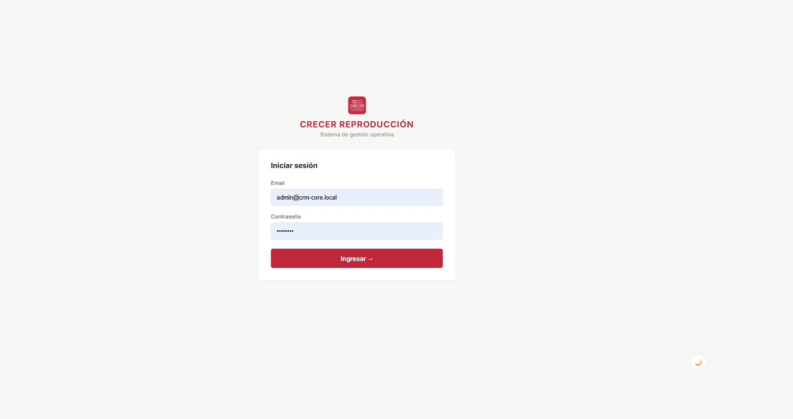
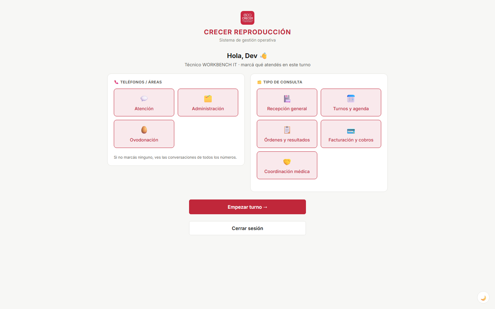
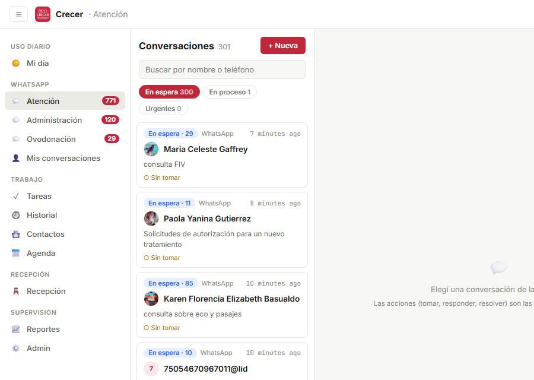
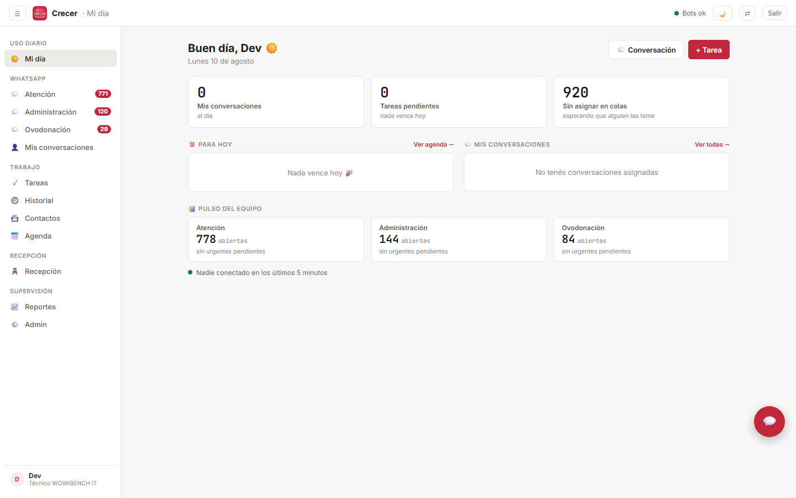
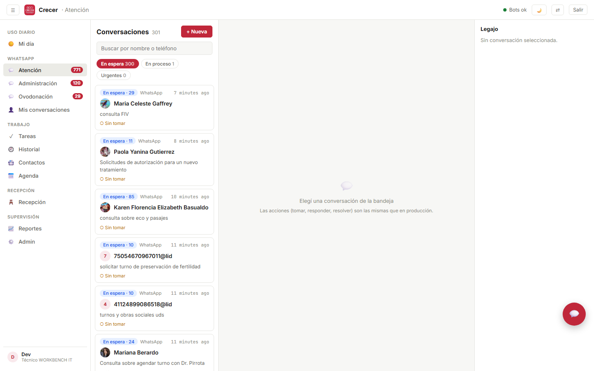
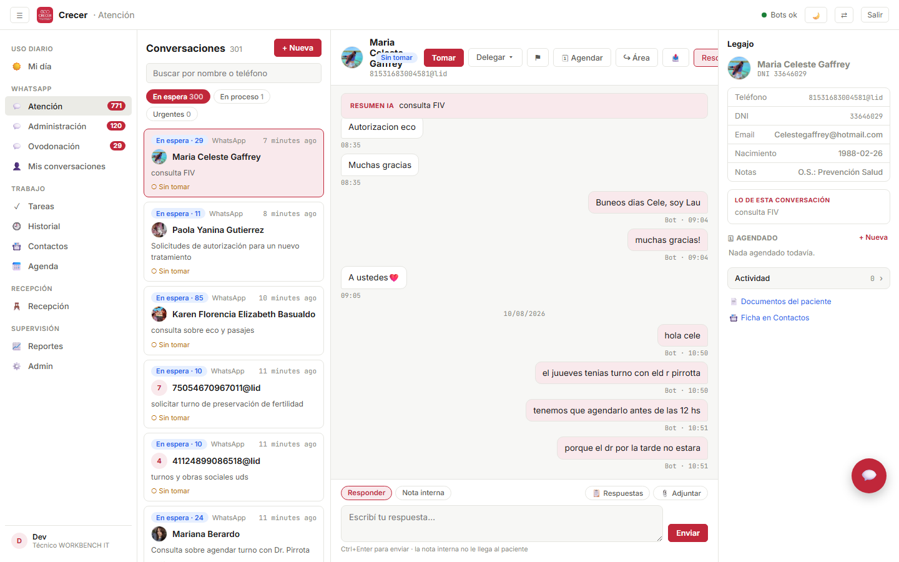
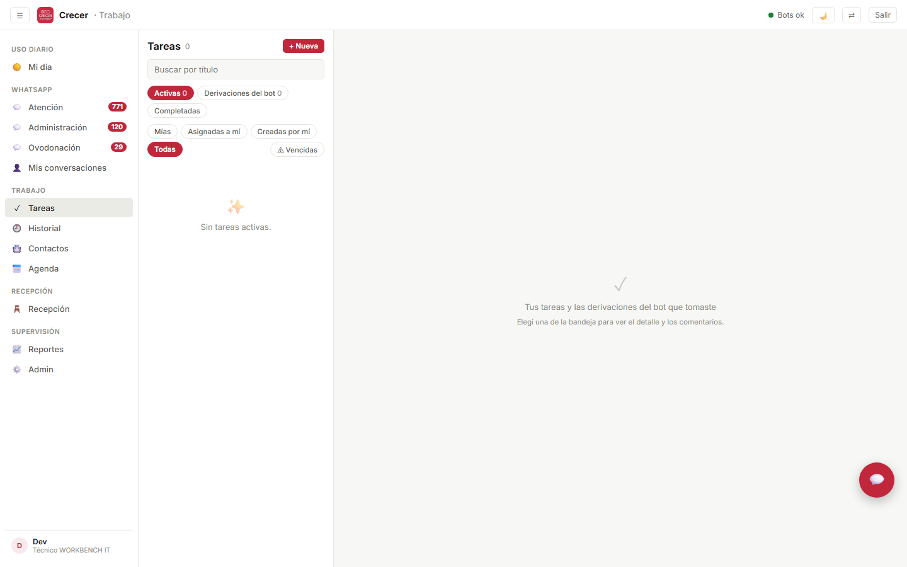
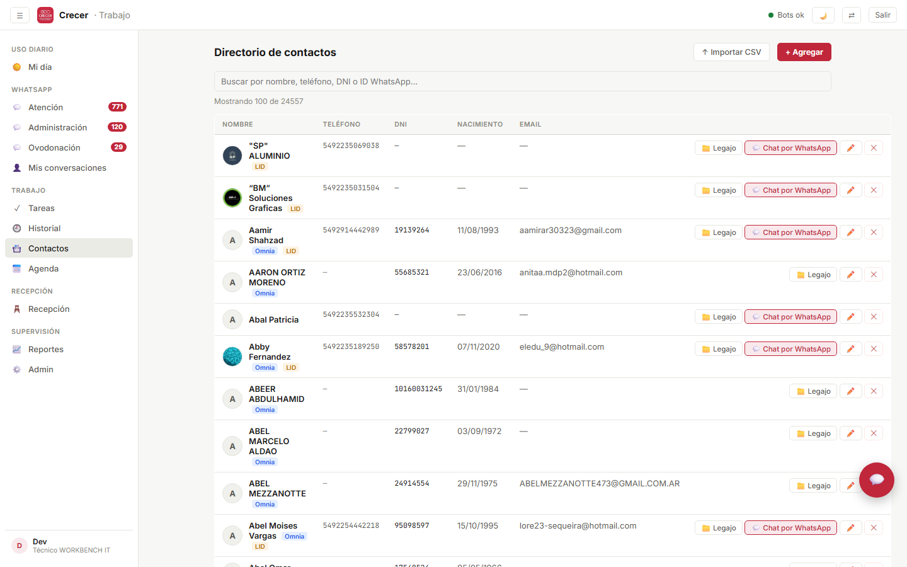
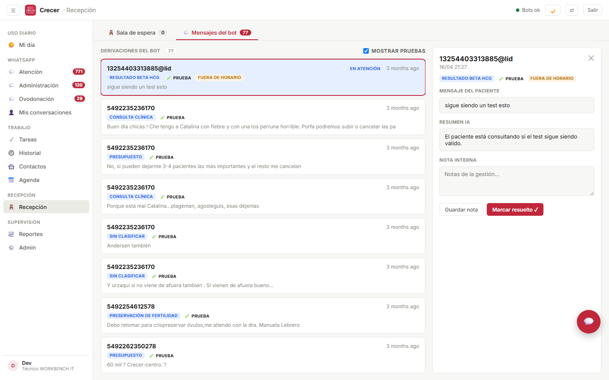

Manual de uso de la plataforma
Todo lo que hace el sistema, opción por opción: qué es, para qué sirve y cómo se usa paso a paso. Escrito para el equipo de Crecer Reproducción — recepción, atención, médicos y administración.
Cómo leer este manual
Cada función del sistema está explicada siempre con la misma estructura, para que puedas saltar directo a lo que necesitás sin leer todo.
El concepto: qué representa esa opción dentro del sistema.
La utilidad concreta en el trabajo del día: qué problema te resuelve.
Los pasos numerados, en orden, tal como aparecen en pantalla.
Convenciones
- Botón — un botón que ves en pantalla, con el texto exacto.
/v2/atencion— la dirección de la pantalla, la que aparece arriba en el navegador.- Ctrl + Enter — teclas que tenés que apretar juntas.
- Píldora — una etiqueta de color del sistema (estado, prioridad, área).
Las capturas son del sistema real en funcionamiento, así que muestran datos de pacientes reales. Este manual es de circulación interna: no lo compartas fuera de la clínica ni lo subas a ningún lado.
Podés buscar cualquier palabra dentro del manual con Ctrl + F, igual que en cualquier página.
Entrar al sistema
TodosEl sistema se usa desde el navegador, sin instalar nada. Funciona desde cualquier computadora de la clínica conectada a la red.
La puerta de entrada. Tu usuario define qué pantallas ves y qué podés hacer; nadie comparte cuenta con nadie.
Para que cada acción quede registrada con tu nombre: quién tomó una conversación, quién respondió, quién resolvió. Eso es lo que después permite mirar el historial y saber qué pasó con un paciente.
- Abrí el navegador y entrá a
http://192.168.1.115(en la PC del servidor también funcionahttp://localhost). - Escribí tu email y tu contraseña.
- Tocá Ingresar →. El sistema te lleva solo a la pantalla que corresponde a tu rol.

Después de 5 intentos fallidos el acceso queda bloqueado 15 minutos. No es un error: es una protección para que nadie pueda adivinar contraseñas probando. Esperá y volvé a intentar, o pedile a un administrador que te la reinicie.
Una pantalla que aparece al entrar (solo para recepción) donde marcás qué colas de WhatsApp vas a atender hoy: Atención, Administración, Ovodonación, o varias.
Para que el sistema sepa quién está cubriendo cada número y no queden mensajes esperando sin dueño. Si sos la única en el turno y marcás las tres, ves todo; si son varias repartidas, cada una ve lo suyo y no se pisan.
- Marcá las casillas de las colas que vas a atender en este turno.
- Tocá Confirmar.
- Si más tarde cambia el reparto, tocá el botón ⇄ arriba a la derecha y volvé a declarar.

El sistema asume que atendés todas las colas. Es el comportamiento seguro: preferimos que veas de más y no que un mensaje quede sin mirar.
El botón Salir arriba a la derecha cierra tu sesión.
Para que nadie use el sistema con tu nombre si te levantás de la PC. Es especialmente importante en las computadoras compartidas de recepción.
- Tocá Salir arriba a la derecha.
- Confirmá en el cartelito que aparece.
La pantalla y el menú
TodosTodas las pantallas del sistema comparten la misma estructura: una barra arriba, un menú a la izquierda y el contenido en el centro. Aprendiendo esto una vez, ya sabés moverte por todo.

La barra de arriba
Con “Bot caído” los mensajes que mandes van a fallar y los que envíen los pacientes no van a entrar hasta que se recupere. El sistema se repara solo en la mayoría de los casos; si sigue en rojo más de unos minutos, avisá al área de sistemas. Todo lo demás (tareas, contactos, recepción) sigue funcionando normal.
El menú lateral
Está agrupado por tipo de trabajo. Solo ves las secciones para las que tenés permiso, así que tu menú puede tener menos entradas que el de un compañero — es normal.
| Sección | Qué agrupa |
|---|---|
| Uso diario | Mi día — el resumen de lo tuyo al empezar la jornada. |
| Las tres colas (Atención, Administración, Ovodonación) y Mis conversaciones. | |
| Trabajo | Tareas, Historial, Contactos y Agenda. |
| Recepción | La sala de espera y los mensajes derivados por el bot. |
| Consultorio | La pantalla del médico: sala, llamados y tareas delegadas. |
| Supervisión | Reportes y Administración. |
El globito al lado de cada cola muestra cuántas conversaciones sin tomar tienen mensajes sin leer. Es el indicador de trabajo pendiente: si está en cero, esa cola está al día.
Un chat entre compañeros, adentro del sistema. Tiene un canal de Equipo (lo ven todos) y mensajes directos a una persona.
Para coordinar sin salir del sistema ni usar el WhatsApp personal: “te paso la conversación de la señora Gómez”, “subí a consultorio 3”. Queda registrado y no se mezcla con los mensajes de pacientes.
- Tocá el botón flotante de chat, abajo a la derecha.
- Elegí Equipo para hablarle a todos, o el nombre de una persona para un mensaje directo.
- Escribí y mandá. Los mensajes nuevos aparecen solos, al instante.
Mi día
Recepción · AtenciónLa pantalla con la que conviene arrancar la jornada. Junta en un solo lugar lo que tenés pendiente vos, sin que tengas que ir a buscarlo por las distintas secciones.

Los tres indicadores de arriba
No son adornos: cada uno es un atajo. Tocalos para ir directo a la lista que resumen.
| Indicador | Qué te está diciendo |
|---|---|
| Mis conversaciones | Cuántas conversaciones de WhatsApp tenés asignadas a vos. Abajo aclara cuántas son urgentes y cuántas tienen mensajes sin leer. |
| Tareas pendientes | Cuántas tareas tuyas siguen sin completar, y cuántas vencen hoy o ya vencieron. |
| Sin asignar en colas | Cuántas conversaciones están esperando que alguien las tome. Es el número del equipo, no el tuyo: si crece, hay gente esperando respuesta. |
La lista de tus tareas que vencen hoy o que ya están vencidas. Las vencidas aparecen marcadas en rojo con la fecha en que vencieron.
Para no depender de la memoria ni de papelitos: lo que hay que hacer hoy está acá, y se tacha desde acá mismo.
- Leé la lista. El puntito rojo a la izquierda marca prioridad alta.
- Cuando terminás una, tocá el círculo ✓ de la izquierda: se tacha y desaparece.
- Si no vence nada, vas a ver “Nada vence hoy 🎉”.
Una franja al pie con el estado de las tres colas: cuántas conversaciones abiertas tiene cada una y cuántas urgentes están sin tomar. Abajo, quiénes están conectados en los últimos 5 minutos.
Para ver de un vistazo dónde está el cuello de botella y quién está disponible. Si Ovodonación tiene 3 urgentes sin tomar y vos estás liviana, ya sabés dónde meterte.
- Mirá el número grande de cada área: son las conversaciones abiertas.
- Si abajo dice algo en rojo (“2 urgentes sin tomar”), esa cola necesita atención ya.
- Tocá el recuadro del área para ir directo a esa cola.
Los dos botones de acción rápida
Las tres colas de WhatsApp
Recepción · AtenciónEl corazón del sistema. Cada número de WhatsApp de la clínica tiene su propia cola, y los mensajes que entran caen ahí para que alguien los tome y los responda.
| Cola | Número | Para qué se usa |
|---|---|---|
| Atención | +54 9 223 599-7247 | La línea general de la clínica: turnos, consultas de pacientes, estudios. |
| Administración | +54 9 223 346-9767 | Temas administrativos: facturación, obras sociales, autorizaciones. |
| Ovodonación | +54 9 223 456-5067 | El programa de ovodonación, que tiene su propio circuito y sus tiempos. |
Son tres teléfonos distintos de verdad, no tres carpetas. La paciente que escribe a Ovodonación recibe respuesta desde ese mismo número, y quien atiende esa cola no se mezcla con las consultas de turnos. Se puede pasar una conversación de un área a otra cuando entró por el número equivocado (ver sección 6).

La bandeja (columna izquierda)
Tres botones que parten la cola según el estado, con el número al lado de cada uno.
Para separar lo que espera de lo que ya está siendo trabajado, y para ir primero a lo urgente.
- En espera — nadie las tomó todavía. Es la pila de trabajo por hacer.
- En proceso — alguien ya las tomó y las está trabajando (dice quién).
- Urgentes — las marcadas con la banderita, sin importar si están tomadas o no.
Cómo leer una tarjeta de la bandeja
| Lo que ves | Qué significa |
|---|---|
| En espera · 3 | Nadie la tomó y tiene 3 mensajes sin leer. |
| En proceso | Ya la está trabajando alguien del equipo. |
| Urgente | Marcada como urgente: va primera en la lista y el borde de la tarjeta se pone rojo. |
| ○ Sin tomar | Está libre, la podés tomar vos. |
| ● Carla la tiene | Está asignada a esa persona. Podés abrirla igual para leerla. |
| El texto gris | El resumen de la conversación. Cuando el paciente escribió algo sustancioso, lo genera la IA; si no, es el último mensaje. |
| La hora a la derecha | Hace cuánto fue el último movimiento. Se pone roja si es urgente. |
Las conversaciones se ordenan solas: primero las urgentes, y dentro de cada grupo, las de actividad más reciente arriba. No hace falta que las ordenes.
El campo de búsqueda arriba de la lista. Filtra por nombre del contacto o por teléfono.
Cuando el paciente te llama por teléfono mientras tenés 40 conversaciones abiertas y necesitás encontrar la suya ya.
- Escribí parte del nombre o del número.
- La lista se filtra sola mientras tipeás.
- Borrá el texto para volver a ver todo.
La bandeja y la conversación abierta se actualizan al instante: cuando entra un mensaje o alguien del equipo toma, responde o resuelve una conversación, lo ves enseguida sin recargar. Si la conexión en tiempo real se corta, la pantalla sigue actualizándose sola cada pocos segundos.
Notificaciones del sistema operativo (las que salen en la esquina de la pantalla) más un tono corto.
Para enterarte sin estar mirando la pantalla. Saltan en dos casos: entra una conversación urgente nueva, o alguien te delega una conversación a vos.
- La primera vez, el navegador te pregunta si permitís notificaciones: aceptá.
- Dejá la pestaña del sistema abierta (puede estar de fondo).
- Si no querés más avisos, se desactivan desde la configuración del navegador para este sitio.
Trabajar una conversación
Recepción · AtenciónLa columna del centro: el ida y vuelta con el paciente. Es lo más parecido a WhatsApp que vas a encontrar en el sistema, con algunos agregados que WhatsApp no tiene.

Leer el hilo
- A la izquierda, en gris: lo que escribió el paciente.
- A la derecha, en color: lo que mandó la clínica. Debajo dice quién lo mandó y a qué hora — si lo mandó el bot automático, dice “Bot”.
- En el centro, en amarillo: las notas internas, que el paciente nunca ve.
- Líneas grises finitas: los eventos. “Carla tomó la conversación”, “Marina la derivó de área”. Es la trazabilidad de quién hizo qué.
- Los audios se escuchan con el reproductor, y abajo aparece la transcripción en cursiva: podés leer lo que dijo el paciente sin ponerte los auriculares.
Arriba del hilo, en un recuadro, puede aparecer un resumen automático de lo que viene pidiendo el paciente. Sirve para ponerte al día en 5 segundos cuando agarrás una conversación larga que venía trabajando otra persona. No lo escribió nadie del equipo: lo genera el sistema.
Ver mensajes viejos
Se cargan los últimos 100 mensajes. Si la conversación es más larga, aparece arriba Ver mensajes anteriores. También se cargan solos al llegar arriba de todo haciendo scroll.
Responder
Dos modos del mismo cuadro de escritura. Responder le manda el mensaje al paciente por WhatsApp. Nota interna guarda un comentario que queda en el hilo pero no se envía.
La nota interna es para dejarle contexto al que siga: “llamé y no atiende”, “la obra social pidió la orden firmada”. Así el que agarra la conversación mañana no arranca de cero.
- Elegí el modo: Responder o Nota interna.
- Escribí en el cuadro de abajo.
- Tocá Enviar (o Guardar nota), o apretá Ctrl + Enter.
Es el error más fácil de cometer: escribir una nota para tus compañeras y que se le mande al paciente. Antes de enviar, mirá que el botón activo sea el correcto — en modo nota el cuadro dice “Nota interna (no se envía al paciente)”.
Textos ya escritos y guardados, propios de cada área, que se insertan con un clic.
Para no reescribir 30 veces por día lo mismo, y para que todo el equipo conteste igual las preguntas típicas (horarios, requisitos, preparación de estudios).
- Tocá 📋 Respuestas.
- Elegí la que necesitás: el texto se carga en el cuadro de escritura.
- Editalo si hace falta (agregar el nombre, cambiar un horario) y enviá.
Las respuestas se cargan y editan desde Admin → Respuestas rápidas. Si el menú aparece vacío es porque esa área todavía no tiene ninguna cargada.
Mandar una imagen, un PDF o un documento por WhatsApp desde el sistema.
Para enviar órdenes, indicaciones de preparación, resultados o formularios sin tener que agarrar el celular.
- Tocá 📎 Adjuntar y elegí el archivo.
- Aparece una tira con el nombre del archivo. Si te equivocaste, tocá la ✕ para quitarlo.
- Si querés, escribí una leyenda en el cuadro de texto.
- Tocá Enviar.
No se puede adjuntar un archivo a una nota interna: el botón desaparece cuando pasás a ese modo. Si necesitás guardar un documento del paciente, va al legajo (sección 14), no al chat.
Responder apuntando a un mensaje específico, igual que la función “responder” de WhatsApp. El paciente ve tu respuesta con el mensaje citado arriba.
Cuando el paciente mandó cinco cosas juntas y contestás una en particular, para que se entienda a cuál.
- Pasá el mouse sobre el mensaje y tocá la flechita ↩ que aparece debajo.
- Arriba del cuadro de escritura aparece “Respondiendo a…”.
- Escribí y enviá. Para cancelar la cita, tocá la ✕.
Acciones sobre la conversación
Recepción · AtenciónLos botones de arriba a la derecha. Son los que hacen que el trabajo no se pise entre compañeras y que nada quede sin cerrar.
Asignarte la conversación a vos. Deja tu nombre visible para todo el equipo.
Para evitar que dos personas le contesten lo mismo al mismo paciente. Es la regla básica de convivencia de la cola: primero tomar, después responder.
- Abrí la conversación desde la bandeja.
- Tocá Tomar. La píldora pasa a decir “La tenés vos”.
- Si ya la tiene otra persona, el botón dice Tomarla yo — usalo solo si esa persona no está o te la pasó.
Pasarle la conversación a una persona concreta del equipo.
Cuando el tema no es tuyo o te vas del turno: la persona que la recibe ve un aviso en pantalla y le aparece en “Mis conversaciones”. No queda librado a que alguien la mire.
- Tocá Delegar ▾.
- Elegí la persona de la lista que se despliega.
- Listo: queda a su nombre y le llega la notificación.
Una marca que sube la conversación al tope de la cola y le pone borde rojo.
Para que algo que no puede esperar no quede sepultado entre 50 mensajes. Además dispara un aviso al resto del equipo cuando entra una urgente nueva.
- Tocá ⚑ para marcarla.
- Tocá de nuevo el mismo botón para sacarle la marca.
Si todo es urgente, nada es urgente. Reservalo para lo que realmente no puede esperar al resto del día.
Crear una tarea o agendar una llamada ligada a esa conversación y a ese paciente.
Para lo que no se resuelve ahora: “llamarla el lunes”, “chequear si llegó la autorización”. La tarea queda pegada a la conversación, así que cuando la abras de nuevo vas a ver qué había quedado pendiente.
- Tocá 🗓 Agendar.
- Elegí 📋 Tarea o 📞 Llamada — solo cambia el título sugerido.
- Completá título, cuándo vence, prioridad y a quién se la asignás (por defecto, a vos).
- Tocá Crear. Aparece en el legajo de la derecha y en el Centro de tareas.
Mandar la conversación a la cola de otra área (Clínica, Administración u Ovodonación).
Cuando el paciente escribió al número equivocado. En vez de contestarle “escribí al otro número”, la conversación se pasa sola a la cola correcta.
- Tocá ↪ Área.
- Elegí el área destino.
- El sistema le avisa al paciente por el número actual que va a recibir respuesta desde el número de la otra área, y la conversación pasa a esa cola.
Mandarle el hilo completo a otro contacto por WhatsApp, y archivar la conversación.
Para pasarle un caso a alguien de afuera del sistema — un médico, un laboratorio, un referente. Lo recibe como un mensaje de WhatsApp común.
- Tocá 📤.
- Buscá el contacto destino por nombre o teléfono y seleccionalo.
- Agregá un comentario si querés dar contexto.
- Tocá Reenviar y archivar.
No es solo “compartir”: al reenviar, la conversación se cierra y sale de la cola. Si necesitás seguir hablando con el paciente después, tenés que reabrirla desde el Historial.
Cerrar la conversación. Sale de la cola y queda archivada en el Historial.
Para que la cola muestre solo lo que falta hacer. Una cola que nadie resuelve deja de servir como lista de pendientes.
- Terminá lo que había que hacer con ese paciente.
- Tocá Resolver.
- Si el paciente vuelve a escribir, la conversación se reabre sola con el mensaje nuevo.
Todo queda guardado y se puede consultar en el Historial, con el hilo completo. Resolver es “ya está atendido”, no “eliminar”.
El legajo lateral
Recepción · AtenciónLa columna de la derecha. Te dice con quién estás hablando sin que tengas que irte a otra pantalla a buscarlo.
| Bloque | Qué muestra y para qué |
|---|---|
| Identificación | Foto de WhatsApp, nombre y DNI. Si dice No está en contactos, esa persona no está en el directorio. |
| Datos | Teléfono, DNI, email, fecha de nacimiento y notas del contacto. |
| Lo de esta conversación | El resumen automático del pedido del paciente. |
| 🗓 Agendado | Las tareas ligadas a este paciente. Se tildan desde acá y se crean con + Nueva. |
| Actividad | Desplegable con quién hizo qué y cuándo: tomó, delegó, resolvió, marcó urgente. |
| Enlaces | Atajos a los documentos del paciente y a su ficha en Contactos. |
Dar de alta en el directorio a alguien que escribió pero no estaba cargado. El botón aparece solo en esas conversaciones.
Para que deje de ser un número suelto: al agregarlo, la conversación queda vinculada a la ficha y podés ver su legajo, sus documentos y su historial.
- Tocá + Agregar a contactos abajo del legajo.
- Completá nombre y teléfono (obligatorios) y el DNI si lo tenés.
- Tocá Guardar contacto.
Por una cuestión de privacidad de WhatsApp, en la mayoría de los chats el sistema no puede saber el número real de quien escribe (ves un identificador interno que termina en @lid). En esos casos el campo teléfono viene vacío y lo tenés que cargar vos — preguntándoselo al paciente o buscándolo en Omnia por DNI.
Iniciar una conversación
Recepción · AtenciónEscribirle primero al paciente, en vez de esperar a que escriba él.
Un formulario que crea la conversación y manda el primer mensaje desde el número de WhatsApp del área en la que estás parada.
Recordatorios de turno, avisar que una receta está lista, pedir que se acerquen a firmar algo, coordinar una muestra. Todo queda registrado en el sistema, no en el celular de alguien.
- Tocá + Nueva arriba de la bandeja (o 💬 Conversación en Mi día).
- Elegí cómo identificar al destinatario:
- Buscar contacto — escribí nombre, teléfono o DNI y elegilo de la lista.
- Número manual — 10 dígitos con código de área, sin 0 ni 15. Ejemplo:
2231234567.
- Si querés, elegí una plantilla rápida (recordatorio de turno, receta lista, solicitar muestra, pedido de información) y editá el texto.
- Tocá Iniciar y enviar.
Antes de enviar, el sistema chequea contra WhatsApp que el número exista. Si no existe o está mal escrito, te avisa y no manda nada. Si esa persona ya tenía una conversación abierta, en vez de duplicarla la reabre.
Si abrís el formulario parada en la cola de Ovodonación, el mensaje sale por el número de Ovodonación. Fijate en qué cola estás antes de mandar, o elegí el área en el desplegable cuando lo abrís desde Mi día.
Mis conversaciones
Recepción · AtenciónLas conversaciones que están a tu nombre, de todas las áreas juntas. Tu lista de trabajo personal.
La misma pantalla de tres columnas de las colas, pero la bandeja muestra solo lo asignado a vos, sin importar el área.
Para trabajar tu propia carga sin el ruido de la cola general, y para no olvidarte de algo que tomaste hace dos días. Si atendés varias áreas, las ves todas juntas acá.
- Entrá desde el menú, en WhatsApp → Mis conversaciones.
- Filtrá con los tres botones: Todas, Con mensajes nuevos, Urgentes.
- Trabajalas igual que en la cola: se responde y se actúa exactamente igual.
La lista muestra lo que sigue siendo tuyo. Al resolver una conversación o pasársela a otra persona, sale sola de acá — así lo que queda es siempre lo que te falta hacer.
Tareas
Recepción · AtenciónEl centro de tareas: todo lo que hay que hacer y que no es responder un mensaje. Reemplaza los papelitos y el “acordate de llamar a la señora”.

Las tres vistas
| Vista | Qué muestra |
|---|---|
| Activas | Las tareas sin completar. Es la vista de trabajo. |
| Derivaciones del bot | Los mensajes que el bot clasificó y vos tomaste para gestionar. No son tareas que creó una persona: las generó el sistema al leer un WhatsApp. |
| Completadas | El archivo de lo que ya se hizo. |
Y los filtros de a quién pertenecen
Debajo de las vistas hay una segunda fila: Mías, Asignadas a mí, Creadas por mí, Todas, más un botón ⚠ Vencidas que deja solo las que pasaron de fecha sin completarse.
Un pendiente con título, detalle, responsable, prioridad y fecha de vencimiento.
Para que el trabajo que no se hace en el momento no dependa de que alguien se acuerde. Y para repartirlo: la persona a la que se la asignás la ve en su “Mi día”.
- Tocá + Nueva.
- Escribí el título (obligatorio) y el detalle si hace falta.
- Elegí a quién se la asignás — por defecto viene a tu nombre.
- Poné cuándo vence y la prioridad.
- Tocá Crear tarea.
Qué se hace con una tarea abierta
Cuando creás una tarea desde el botón 🗓 Agendar de una conversación, queda ligada a ese paciente. La ves tanto acá como en el legajo de la conversación, y podés saltar de una a otra.
Completar deja registro de que la tarea existió y se hizo. Eliminar la borra como si nunca hubiera estado. Salvo que la hayas creado por error, siempre conviene completar.
Agenda
Con permiso de agendaLa misma información de tareas, pero ordenada por cuándo vencen. Es la vista de calendario del trabajo pendiente.
Una lista agrupada por vencimiento: Vencidas, Hoy, Mañana, después por fecha, y al final Sin fecha.
Para planificar. El Centro de tareas responde “qué tengo que hacer”; la Agenda responde “cuándo”. Es la vista que conviene mirar si estás organizando la semana o repartiendo trabajo.
- Filtrá por estado en la columna izquierda: Pendientes, Completadas o Todas.
- Filtrá por responsable: Mías, Todas, o una persona.
- Buscá por texto con el campo de arriba.
- Tildá el círculo de la izquierda para completar, ✎ para editar, ✕ para eliminar.
Si la tarea salió de un WhatsApp o de una derivación del bot, tiene un chip 💬 WA o 🤖 BOT. Tocalo para ir a la conversación que la originó.
Historial
Con permiso de historialTodo lo que ya se cerró: conversaciones resueltas, derivaciones del bot y tareas completadas. Es la memoria de la clínica.
Una tabla con filtros por fecha, tipo, área y texto libre.
Para responder preguntas del tipo “¿qué le dijimos a esta paciente el mes pasado?”, “¿quién atendió este caso?”, “¿esto se resolvió o quedó colgado?”. Es la fuente cuando hay un reclamo o hay que reconstruir qué pasó.
- Poné el rango de fechas en Desde y Hasta.
- Elegí el Tipo: Todos, Bot, WhatsApp o Tareas.
- Elegí el Área si querés acotar a una cola.
- Escribí en Buscar el nombre del contacto o el título.
- Tocá Filtrar. Con Limpiar volvés a empezar.
Sobre cada fila
- Ver ▾ — despliega el detalle ahí mismo: el hilo de mensajes, los eventos y los comentarios.
- ↩ Reabrir — devuelve la conversación o la derivación a la cola de su área, para seguir trabajándola. No aparece en las tareas.
Cuando filtrás, los criterios quedan guardados en la dirección de la página. Podés marcar esa búsqueda como favorita en el navegador o pasarle el link a un compañero, y va a ver exactamente lo mismo.
Contactos
Con permiso de contactosEl directorio de pacientes: quién es quién, con su teléfono, DNI y vínculo con Omnia.

El buscador principal. Encuentra por nombre, teléfono, DNI o identificador de WhatsApp.
Es el punto de partida cuando el paciente llama por teléfono: buscás por DNI o apellido y desde ahí llegás a su ficha, sus documentos o le abrís un WhatsApp.
- Escribí en el campo de búsqueda. Los resultados se filtran solos.
- Si hay muchos, tocá Ver más contactos abajo para seguir cargando.
- Hacé clic en la fila para abrir la ficha completa.
Los botones de cada fila
Las etiquetas que podés ver
- Omnia — el contacto está vinculado al sistema Omnia, así que se le puede traer la agenda y los turnos.
- LID — WhatsApp identifica a esa persona con un código interno en vez del número real, por privacidad. Su teléfono hay que cargarlo a mano.
La ficha del paciente: teléfono, nombre, email, DNI, ID de Omnia y notas internas.
Un contacto bien cargado hace que todo lo demás funcione: los mensajes muestran el nombre en vez de un número, se puede cruzar con Omnia y el legajo queda ordenado.
- Tocá + Agregar, o hacé clic en un contacto existente para editarlo.
- Completá los datos. El nombre es obligatorio; el teléfono es lo que habilita el WhatsApp.
- Tocá Guardar.
Una carga masiva de pacientes a partir del archivo que exporta Omnia, con vista previa antes de confirmar.
Para no cargar cientos de pacientes a mano y para mantener el directorio al día con el padrón real de la clínica.
- Tocá ↑ Importar CSV.
- Elegí el archivo exportado de Omnia y tocá Previsualizar →.
- Revisá la lista: el sistema marca cuáles son nuevos y cuáles ya existen.
- Destildá lo que no quieras traer y tocá Importar seleccionados.
Es el paso que evita duplicar medio padrón. Si algo no cierra en la previsualización, no confirmes: volvé y revisá el archivo.
Documentos del paciente
Con permiso de contactosEl legajo digital: estudios, órdenes, resultados y comprobantes de cada paciente, todo junto.
Una galería con todos los archivos de ese paciente: los que mandó por WhatsApp y los que subió el equipo.
Para no tener que rastrear un estudio scrolleando meses de conversación. Todo lo que llegó por WhatsApp se archiva acá automáticamente.
- Entrá desde Contactos → 📁 Legajo, o desde el legajo lateral de una conversación.
- Filtrá por tipo con los chips: Imágenes, PDFs, Audios, Videos.
- Tocá ⭐ Destacados para ver solo lo importante.
- Hacé clic en un documento para verlo en grande.
El buscador no mira solo el nombre: también busca dentro del contenido de las imágenes mediante reconocimiento de texto. Si el paciente mandó la foto de una orden, podés encontrarla buscando una palabra que aparezca escrita en la foto.
Acciones sobre un documento
Un documento eliminado no se recupera. Si tenés dudas, mejor dejarlo sin destacar que borrarlo.
Recepción
RecepciónLa pantalla del mostrador. Tiene dos solapas: la sala de espera con los pacientes presentes, y los mensajes del bot que hay que gestionar.
Solapa 🪑 Sala de espera
La lista de pacientes presentes en la clínica, en orden de atención, con los minutos que llevan esperando.
Para saber quién está, hace cuánto y qué le falta. Cuando alguien espera de más, la tarjeta se pone roja: es la señal para priorizarla o ir a explicarle la demora.
- La lista se actualiza sola, al instante: la paciente que se anuncia en la tablet aparece enseguida en todas las pantallas de recepción.
- Usá ▲ y ▼ para cambiar el orden de atención.
- Hacé clic en una paciente para abrir su ficha a la derecha.
Las marcas de color de cada tarjeta
| Marca | Qué significa |
|---|---|
| Tarjeta roja | Espera excesiva. Necesita atención. |
| En atención | Ya la está atendiendo alguien del mostrador. |
| Los minutos | Cuánto lleva esperando desde que llegó. Se pone rojo al pasar el umbral. |
| Etiquetas de colores | Avisos sobre esa paciente: primera vez, sin turno, viene derivada de WhatsApp, etc. |
La lista de cosas que hay que pedirle o verificarle a la paciente antes de que pase: orden, autorización, credencial, consentimientos. Se arma sola según la obra social, el plan y la práctica de su turno, con las reglas que carga la supervisora (ver sección 19). Los que tienen * son obligatorios, y cada ítem puede traer una nota o una instrucción de qué revisar.
Para que no pase nadie a consultorio sin lo que tiene que tener. Evita que el médico descubra a mitad de la consulta que falta una orden.
- Abrí la ficha de la paciente haciendo clic en su tarjeta.
- Tocá cada ítem para tildarlo a medida que lo verificás. Leé la nota de cada uno: ahí dice, por ejemplo, si hace falta original y copia.
- Escribí lo que haga falta en Nota interna y tocá Guardar nota.
- Tocá Dar presente y liberar a sala →. Si falta algún obligatorio, el sistema te lo muestra y te pide confirmar.
La ficha los muestra en rojo. El botón no se bloquea: podés dar el presente igual si hace falta (por ejemplo, la paciente trae la orden la próxima vez), pero queda registrado qué faltó, quién dio el presente y a qué hora.
El checklist se arma cuando la paciente se anuncia en la tablet. Si la supervisora cambió las reglas después, tocá ↻ actualizar al lado del título del checklist: se vuelve a armar sin perder lo que ya tildaste.
El presente queda registrado en la plataforma, pero todavía no pasa el turno a "recepcionado" en Omnia: la integración con Omnia no permite cambiar el estado de un turno. Si hace falta que figure allá, se sigue marcando a mano en Omnia.
Se usa cuando la persona vino por algo que se resuelve en el mostrador y no pasa a consultorio: retirar un resultado, entregar una orden, hacer una consulta. Sale de la cola sin ir a la pantalla del médico.
Solapa 💬 Mensajes del bot

Mensajes de WhatsApp que el bot leyó, clasificó por tema y derivó para que una persona los gestione.
El bot hace el triage: lee lo que llega, entiende de qué se trata y lo etiqueta. Vos recibís el trabajo ya ordenado por tipo en vez de una lista cruda de mensajes.
- Hacé clic en una derivación para abrir su ficha.
- Leé el mensaje del paciente y, si está, el resumen de la IA.
- Gestioná lo que corresponda y dejá constancia en Nota interna.
- Tocá Marcar resuelto ✓.
Las etiquetas de una derivación
- Etiqueta azul — el tema que detectó el bot (turno, consulta clínica, receta…).
- 🧪 prueba — es una clasificación de prueba, no un caso real. Se puede ocultar destildando mostrar pruebas.
- Fuera de horario — entró cuando la clínica estaba cerrada.
El bot está funcionando en modo prueba a propósito: clasifica y deriva, pero no le responde solo al paciente. Es la configuración elegida para que ninguna respuesta automática salga sin que una persona la haya visto. No es un error.
Mi consultorio
MédicosLa pantalla del profesional: quién está esperando, a quién llamó y qué le pidió a las secretarias.

Los bloques de la pantalla
| Bloque | Qué muestra |
|---|---|
| 🗓️ Mi agenda de hoy | Los turnos del día traídos de Omnia, solo los pendientes. Se actualiza cada 60 segundos. Aparece si el usuario está vinculado a Omnia. |
| 🪑 En sala de espera | Las pacientes que ya hicieron el check-in y recepción liberó. Están listas para ser llamadas. |
| ✓ Llamados / Atendidos hoy | A quiénes llamaste y a quiénes ya atendiste en la jornada. |
| 📋 Tareas que delegué | Lo que le pediste a las secretarias y en qué estado está. |
| 💬 Comunicarme con | Atajos de chat a las secretarias, con un punto verde si están conectadas. |
Avisar que pase a tu consultorio. El llamado se muestra en la pantalla de la sala de espera.
Para no salir a la sala a llamar en voz alta, y para que quede registrado a qué hora se llamó a cada persona.
- Ubicá a la paciente en En sala de espera.
- Tocá el botón de llamar. Se usa tu consultorio por defecto.
- Pasa a la lista de Llamados.
Crear un pendiente y asignárselo a alguien del equipo administrativo.
Para no interrumpir la consulta ni depender de acordarse después: “llamar a la paciente Pérez para reprogramar”, “pedir la autorización de la obra social”. Le llega a esa persona y vos ves cómo avanza.
- Tocá + Nueva tarea en el bloque de tareas.
- Escribí el título y el detalle.
- Elegí a quién se la asignás y la prioridad.
- Poné vencimiento si corresponde y tocá Crear tarea.
Ese bloque aparece solo si tu usuario está vinculado a tu ficha en Omnia. Si no lo ves y deberías, un administrador tiene que hacer el vínculo desde Admin → Médicos.
La tablet de la entrada
PacientesLa pantalla de autogestión con la que la paciente avisa que llegó. No la usa el equipo: la usa el público, pero conviene entender cómo funciona porque alimenta la cola de recepción.
Los tres caminos posibles
| Situación | Qué pasa |
|---|---|
| Tiene turno hoy | Se le muestran sus turnos, elige el suyo y confirma la llegada. |
| No tiene turno | Se le pregunta el motivo: 📅 Turnos, 📋 Recetas o 🧪 Muestras. Confirma y entra igual a la cola. |
| El DNI no aparece | Se le pide que se acerque al mostrador, para que recepción lo cargue a mano. |
Cada confirmación de llegada aparece en la solapa Sala de espera con la hora real. Por eso los minutos de espera son confiables: los marca la paciente al llegar, no una carga manual posterior.
Reportes
AdministraciónLos números de la operación: cuánto entra, cuánto se resuelve y cómo se reparte el trabajo.
Un tablero con tres partes: la foto de hoy, el rendimiento por secretaria y las tendencias en el tiempo.
Para decidir con datos en vez de con impresiones: si hace falta reforzar un turno, en qué franja horaria se satura la atención, si una cola quedó sin cubrir.
- Mirá el bloque de hoy: llegadas por la tablet y documentos cargados.
- En secretarias, elegí el rango de fechas y tocá Aplicar.
- En tendencias, elegí el período y tocá Aplicar.
- Usá ↻ Refrescar para traer los datos del momento.
Los gráficos de tendencias
Administración
AdministraciónLa configuración del sistema. Son diez solapas; las más usadas en el día a día son Estado bot, Usuarios y Respuestas rápidas.
Acá se cambian cosas que afectan a todo el equipo. Si no estás seguro de qué hace una opción, no la toques: preguntá primero.
Una tarjeta por cada uno de los tres bots de WhatsApp, con su estado, el número conectado y hace cuánto está funcionando. Abajo, las tareas programadas del sistema.
Es el primer lugar donde mirar cuando alguien dice “no me llegan los WhatsApp”. Te dice cuál de los tres números está caído y desde cuándo.
- Mirá el estado de cada bot: listo es lo normal.
- Verificá que el número de cada tarjeta sea el correcto de esa área.
- Si un bot dice Esperando escaneo de QR, aparece el código en pantalla: hay que escanearlo con el WhatsApp del celular de ese número.
Escanear el código con el celular equivocado conecta el número equivocado y deja esa cola sirviendo mensajes de otra área. Antes de escanear, confirmá qué número corresponde a la tarjeta que estás mirando.
Las demás solapas
| Solapa | Qué se hace ahí |
|---|---|
| Textos | Editar los mensajes automáticos que manda el bot, sin tocar código. |
| Pruebas | Probar cómo clasifica el bot un mensaje, y activar o desactivar el modo prueba. |
| Logs | Ver en vivo lo que hace el sistema. Se puede pausar, limpiar y filtrar por texto. Es la herramienta para diagnosticar un problema. |
| Usuarios | Crear usuarios, cambiar contraseñas, asignar rol y permisos, dar de baja. |
| Médicos | Cargar profesionales, su especialidad, consultorio y el vínculo con Omnia y con su usuario del sistema. |
| Respuestas rápidas | Crear y editar los textos predefinidos de cada área, y su orden en el menú. |
| Legajo | Configurar dónde se guardan físicamente los documentos de los pacientes. |
| Estadísticas | Números de uso del sistema. |
| Acceso remoto | Iniciar o detener el túnel que permite entrar al sistema desde fuera de la clínica, y copiar la dirección. |
La pantalla donde se define qué le pide recepción a cada paciente. Tiene requisitos (orden médica, autorización previa, credencial, consentimiento…) y reglas que dicen cuándo se pide cada uno: según obra social, plan y práctica, como obligatorio, opcional o no pedir.
Para que la recepcionista vea en la ficha exactamente lo que corresponde a esa obra social y esa práctica, en vez de una lista fija igual para todos. Un campo vacío en una regla vale para todos, y si dos reglas hablan del mismo requisito gana la más específica: obra social + práctica, después obra social, después práctica, después la general.
- En el panel Requisitos, cargá lo que se puede pedir con + Nuevo.
- Tocá + Nueva regla, elegí el requisito y, de las listas, la obra social y la práctica (o dejalas vacías para "todas").
- Elegí el modo y, si sirve, una nota para recepción ("original + 1 copia").
- Revisá el resultado en Probar un caso: muestra lo mismo que va a ver la recepcionista.
Las obras sociales y prácticas vienen de Omnia con su nombre exacto ("Osde Binario", no "OSDE"). Una regla con un nombre escrito a mano que no coincide no se aplica nunca; la pantalla avisa cuando pasa. Mientras no haya reglas cargadas, recepción sigue con el checklist fijo de siempre.
El alta de una persona en el sistema, con su rol y sus permisos.
Para que cada uno entre con lo suyo y vea solo lo que le corresponde.
- Tocá + Nuevo usuario, o Editar en una fila existente.
- Completá nombre y email.
- Poné la contraseña: mínimo 10 caracteres y que no sea una palabra común. Si editás y dejás el campo vacío, la contraseña no cambia.
- Elegí el rol: eso ya carga los permisos habituales de ese puesto.
- Ajustá los permisos uno por uno si esa persona necesita algo distinto.
- Tocá Guardar.
Cuando alguien deja de trabajar en la clínica, destildá Activo en lugar de eliminar el usuario. Así no puede entrar más, pero se conserva el historial de todo lo que hizo.
El listado de textos predefinidos, organizado por área.
Para estandarizar lo que se contesta. Si cambia un horario o un requisito, se corrige acá una vez y todo el equipo pasa a mandar la versión nueva.
- Elegí la solapa del área.
- Tocá + Nueva respuesta.
- Poné un título corto (es lo que ve el operador en el menú) y el texto completo del mensaje.
- Usá el orden para poner primero las más usadas: número menor, más arriba.
- Tocá Guardar.
Roles y permisos
ReferenciaQué ve cada rol. Si a alguien le falta una sección en el menú, acá está la explicación.
| Rol | Qué alcanza |
|---|---|
| Secretaria | Cola de recepción, atención de WhatsApp y contactos. |
| Supervisora | Todo lo de secretaria, más agenda, historial y panel de administración. |
| Administrativo | Lo mismo que supervisora. |
| Médico | Solo su consultorio. |
| Técnico | Acceso completo, para soporte del sistema. |
Los permisos, uno por uno
| Permiso | Qué habilita |
|---|---|
| Cola de recepción | La pantalla de Recepción y la declaración de colas. |
| Atención y mis tareas | Las colas de WhatsApp, Mis conversaciones y el Centro de tareas. |
| Contactos | El directorio y los documentos de pacientes. |
| Agenda | La vista de agenda. |
| Ver historial | El historial de lo cerrado. |
| Administración | El panel de admin y los reportes. |
| Panel médico | Mi consultorio. |
Elegir un rol carga los permisos habituales de ese puesto, pero después se pueden ajustar uno por uno. Por eso dos personas con el mismo rol pueden tener menús distintos.
Problemas frecuentes
TodosLo que más aparece en el día a día, con qué hacer en cada caso.
Se cortó la conexión con WhatsApp. Ni salen ni entran mensajes hasta que se recupere.
- Esperá unos minutos: el sistema se repara solo en la mayoría de los casos.
- Mirá Admin → Estado bot para ver cuál de los tres está caído.
- Si sigue caído, avisá a sistemas indicando qué área y desde cuándo.
- Mientras tanto podés seguir trabajando en tareas, contactos y recepción con normalidad.
La sesión venció por inactividad. Es normal si dejaste la pantalla abierta mucho tiempo.
- Apretá F5 para recargar.
- Si te lleva al login, volvé a entrar.
- Si el mensaje se repite todo el tiempo en la misma computadora, avisá a sistemas: puede ser el antivirus interfiriendo.
Esa persona no está en el directorio de contactos, y WhatsApp no revela su número real por privacidad.
- En el legajo de la derecha, tocá + Agregar a contactos.
- Cargá nombre y teléfono a mano (preguntáselo al paciente o buscalo en Omnia por DNI).
- Al guardar, la conversación queda vinculada y ya muestra el nombre.
Tu usuario no tiene ese permiso. El menú muestra solo lo habilitado para cada uno.
Pedile a un administrador que revise tus permisos en Admin → Usuarios. En la sección 20 está el detalle de qué habilita cada uno.
Cinco intentos fallidos seguidos bloquean el usuario 15 minutos. Es una protección contra intentos de adivinar contraseñas.
Esperá 15 minutos, o pedile a un administrador que te asigne una contraseña nueva desde Admin → Usuarios.
Casi siempre es el bot de esa área desconectado. También puede ser que el número no exista en WhatsApp.
- Fijate en el semáforo de arriba: si no dice “Bots ok”, es eso.
- Si el semáforo está verde, revisá que el número esté bien escrito: 10 dígitos con código de área, sin 0 ni 15.
- Volvé a intentar. El mensaje no se manda dos veces si falló.
Ayuda muchísimo decir qué pantalla estabas usando, qué hiciste y qué decía el mensaje de error textual. Con eso el problema se resuelve mucho más rápido que con “no anda”.